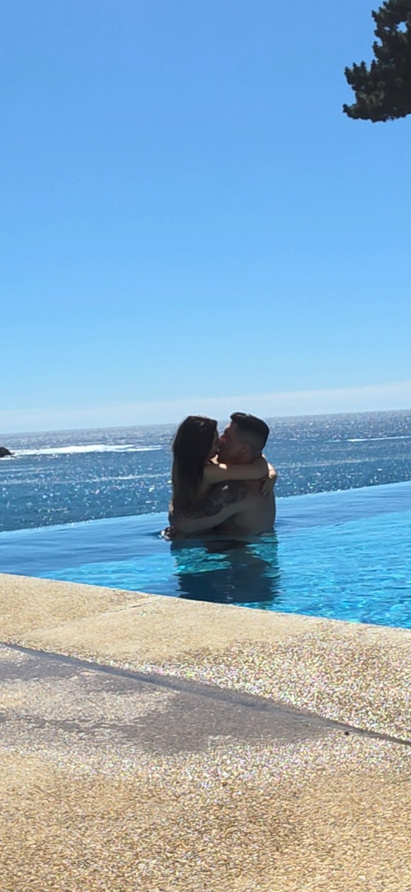

♡
Una carta desde mi corazón
Para usted,
mi señorita Javi
Hay cosas que no sé explicar…
pero que mi corazón necesita decirle.
Active el sonido para escuchar el piano

Hay cosas que no sé explicar…
pero que mi corazón necesita decirle.